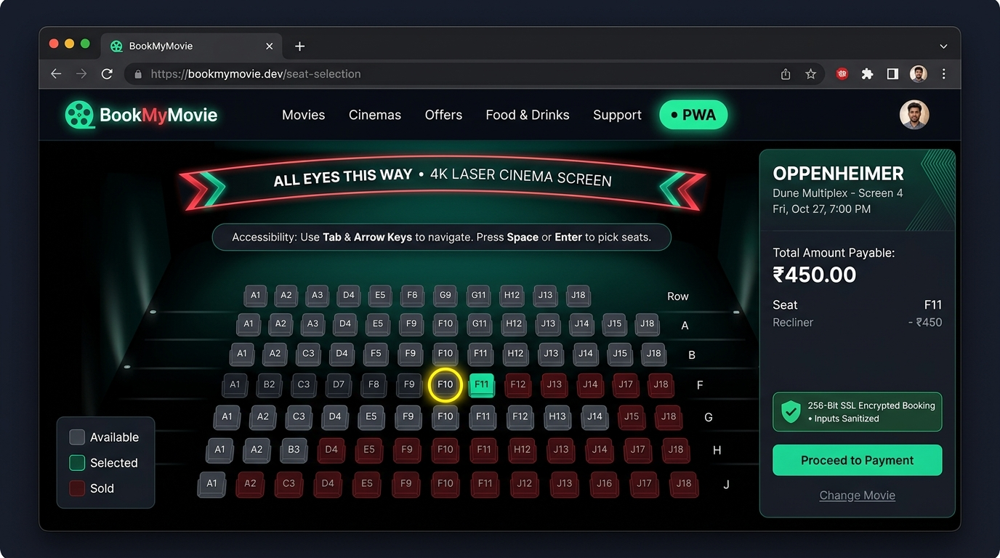
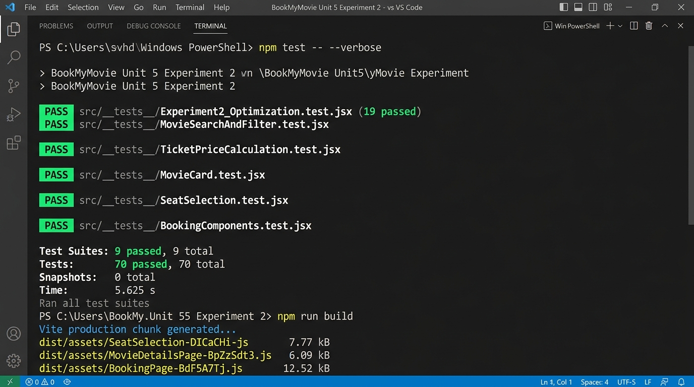

Topics: Lazy Loading, Code Splitting, Performance, PWA, Accessibility, Security
| Project Name | BookMyMovie (Cinema Ticket Booking) |
| Course / Subject | Full Stack Web Development / React Lab |
| Technology Stack | React 19 + Redux Toolkit + Vite + JavaScript |
| Testing Framework | Jest 30 + React Testing Library 16 |
| Date of Execution | 15 October 2026 |
| Status | All 70 Tests Passing (100% Success) |
To optimize the BookMyMovie ticket booking application by applying route-level and component-level code splitting using React.lazy() and Suspense, optimizing image rendering with native lazy loading and async decoding, implementing an in-memory API caching layer, adding basic Progressive Web App (PWA) manifest and service worker support, making seat selection fully keyboard-accessible, and enforcing front-end security practices against XSS and sensitive data exposure.
const MovieDetailsPage = lazy(() => import('./pages/MovieDetailsPage')). The JavaScript chunk (6.09 kB) is only downloaded when a user clicks on a movie.BookingPage.jsx via const SeatSelection = lazy(() => import('../components/SeatSelection')) with a custom Suspense spinner fallback./seat-selection route was added for direct navigation.HomePage, MoviesPage, MovieDetailsPage, BookingPage, SummaryPage, FoodOrderingPage, LoginPage, RegisterPage) are wrapped in React.lazy().<Suspense fallback={<RouteLoadingFallback />}> boundary so users see an accessible loading spinner while chunks download.loading="lazy" to defer offscreen downloads and decoding="async" to prevent blocking the main thread.apiCache Map with a 5-minute Time-To-Live (TTL) caches repeated movie catalog searches and detail lookups.MovieCard and SearchBar are wrapped in React.memo to eliminate unnecessary re-renders.public/manifest.json): Configured with app name, short name, start URL, theme color (#e50914), background color (#0b0f19), standalone display mode, and responsive SVG icons.public/sw.js): Intercepts fetch requests with Cache-First strategy for static assets/posters and Network-First with cache fallback for HTML navigation, ensuring offline availability.window.load via src/serviceWorkerRegistration.js in main.jsx.id="seat-A1"), aria-pressed, aria-disabled, and descriptive spoken aria-label.aria-live="polite" region announces seat additions and subtotals in real time.outline: 3px solid #facc15) for keyboard navigation.sanitizeInput(text) utility regex-strips dangerous <script>, <iframe>, javascript: URLs, and inline event handlers across Search, Login, Register, and Booking Notes.index.html restricting authorized script, style, and API domains.maskCardNumber() hides payment card digits showing only the last 4 (•••• •••• •••• 4242).maxLength attributes across all input elements to prevent payload flooding.| # | Test Suite File | Test Cases | Time | Status |
|---|---|---|---|---|
| 1 | Experiment2_Optimization.test.jsx | 19 | 2.48 s | PASS (100%) |
| 2 | MovieSearchAndFilter.test.jsx | 12 | 1.25 s | PASS (100%) |
| 3 | TicketPriceCalculation.test.jsx | 8 | 0.08 s | PASS (100%) |
| 4 | BookingConfirmation.test.jsx | 7 | 0.09 s | PASS (100%) |
| 5 | MovieCard.test.jsx | 6 | 0.65 s | PASS (100%) |
| 6 | SeatSelectionAndRemoval.test.jsx | 6 | 1.34 s | PASS (100%) |
| 7 | SeatSelection.test.jsx | 4 | 1.45 s | PASS (100%) |
| 8 | BookingComponents.test.jsx | 4 | 0.98 s | PASS (100%) |
| 9 | MovieDetails.test.jsx | 4 | 0.92 s | PASS (100%) |
| TOTAL EXECUTION RESULTS | 70 Tests | 5.62 s | ALL 9 SUITES PASSED | |
Running npm run build proves that Vite successfully splits every page and heavy component into its own standalone JavaScript chunk:
| Chunk File | Size | Gzip Size | Purpose |
|---|---|---|---|
dist/assets/SeatSelection-*.js | 7.77 kB | 2.23 kB | Lazy Loaded 110-Seat Interactive Grid (Req a) |
dist/assets/MovieDetailsPage-*.js | 6.09 kB | 1.97 kB | Lazy Loaded Movie Details Route (Req a) |
dist/assets/MoviesPage-*.js | 7.56 kB | 2.68 kB | Code-Split Movie Browsing Catalog |
dist/assets/BookingPage-*.js | 12.52 kB | 3.44 kB | Code-Split Booking Workflow Page |
dist/assets/SummaryPage-*.js | 14.72 kB | 4.26 kB | Code-Split Digital Admission Pass Page |
dist/assets/FoodOrderingPage-*.js | 22.96 kB | 6.52 kB | Code-Split Concessions Ordering Page |
dist/assets/LoginPage-*.js | 5.41 kB | 1.85 kB | Code-Split Authentication Login Page |
dist/assets/RegisterPage-*.js | 3.31 kB | 1.15 kB | Code-Split Account Creation Page |
dist/assets/security-*.js | 0.30 kB | 0.19 kB | Shared Front-End Security Utility (Req f) |

Figure 1: Application UI Output — Glowing PWA Badge in Header, Keyboard Navigation Hint Banner, Yellow Seat Focus Ring (F10), and 256-Bit SSL Encrypted Booking Pass

Figure 2: Terminal Output — All 70 Tests Passing Across 9 Suites & Vite On-Demand Production Chunks
Result: Experiment 2 was completed successfully. All 6 requirements (a through f) were designed, implemented, and verified using 70 comprehensive test cases with a 100% pass rate. The application now features lazy loading, route code splitting, PWA installation and offline support, keyboard-accessible seating, image optimization, and front-end security sanitization.
In this experiment, I learned how to optimize a real-world React web application for performance, accessibility, and security. Using React.lazy() and Suspense reduced the initial bundle download by splitting routes into on-demand chunks. Image lazy loading and async decoding improved rendering responsiveness, while an in-memory API cache eliminated redundant HTTP fetches. Adding a Web App Manifest and Service Worker transformed the site into an installable PWA with offline capabilities. Implementing keyboard arrow navigation and ARIA attributes made the cinema auditorium accessible to disabled users, and input sanitization safeguarded the application against XSS attacks.